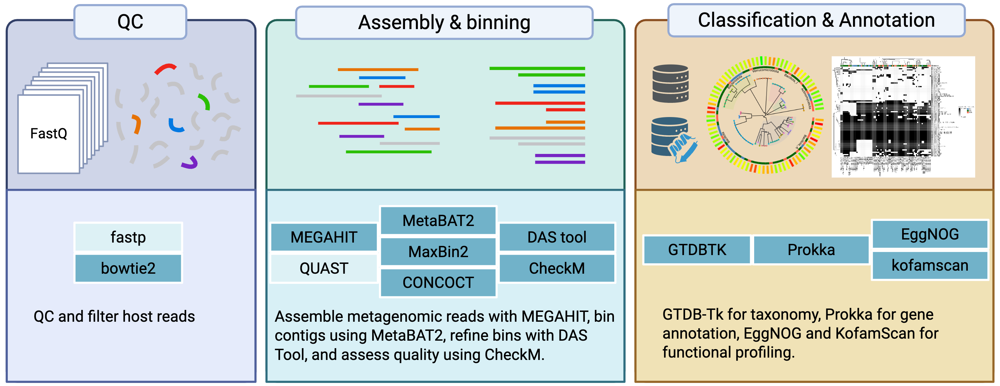

MAGs
메타유전체의 품질 관리, 조립·binning, 유전체 주석을 세 단계로 나누어 실행합니다. 현재 시험 중인 파이프라인입니다.
분석 개요

설치 경로
heekuk_path/
|-- Go_MAGs_QC.sh
|-- Go_MAGs_QC.smk
|-- Go_MAGs_Assembly.sh
|-- Go_MAGs_Assembly.smk
|-- Go_MAGs_Annotation.sh
|-- Go_MAGs_Annotation.smk
|-- scripts/
| `-- summarize_all_results.py
`-- docker/MAGs/
|-- Dockerfile.qc
|-- Dockerfile.assembly
`-- Dockerfile.annotation컨테이너 빌드
cd $CAULAB_PIPELINES/MAGs
docker build -f Dockerfile.qc -t mags-qc:1.0 .
docker build -f Dockerfile.assembly -t mags-assembly:1.0 .
docker build -f Dockerfile.annotation -t mags-annotation:1.0 .품질 관리 실행
Go_MAGs_QC.sh \
-i /path/to/input_fastqs \
-o mags_qc_out \
-d /path/to/bowtie2_host_index/hg38 \
-c 8 \
-j 4 \
-K조립 실행
Go_MAGs_Assembly.sh \
-i mags_qc_out/host_filtered_fastq \
-o mags_assembly_out \
-d /path/to/checkm_data \
-c 24 \
-j 4 \
-K주석 실행
Go_MAGs_Annotation.sh \
-i mags_assembly_out/9_Final_MAGs \
-o mags_annotation_out \
-g /path/to/gtdbtk/release220 \
-e /path/to/eggnog \
-k /path/to/kofam_scan \
-c 24 \
-j 4 \
-K